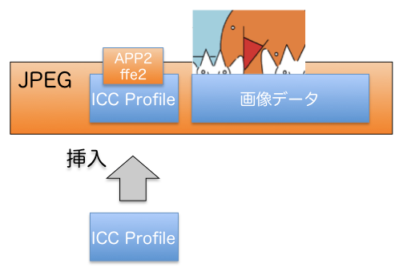
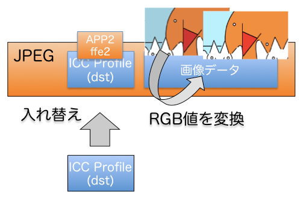

はじめに
このエントリの続きです。
- ImageMagick で ICC プロファイルを扱う #2 コマンド実行例 〜 JPEG のメタデータ削除
ImageMagick で JPEG に埋め込まれた ICC プロファイルを操作する
JPEG ファイルは ICC プロファイルを埋め込めます。ImageMagick でその ICC プロファイルを操作するコマンドについて整理しました。
存在チェック (check)
ICC プロファイルが入っている場合
% identify -format "%[profiles]\n" test.jpg
icc
ICC プロファイルが入っていない場合
- メタデータが何も入っていない場合
% identify -format "%[profiles]\n" test2.jpg
identify: unknown image property "%[profiles]" @ warning/property.c/InterpretImageProperties/3888.
- Exif や XMP が入っている場合
% identify -format "%[profiles]\n" test2.jpg
exif,xmp
抽出 (extract)
% convert test.jpg test.icc
%
削除 (delete)
% convert test.jpg +profile icc output.jpg
%
挿入 (insert)
% identify -format "%[profiles]" test.jpg
identify: unknown image property "%[profiles]" @ warning/property.c/InterpretImageProperties/3888.
% convert test.jpg -profile sRGB.icc output.jpg
%
↓ ↓ ↓

注意点: CMYK プロファイル
尚、この挿入ケースのように、ICC プロファイルが入っていない RGB (YCbCr)JPEG に対しては、 CMYK の ICC プロファイルも適用すると、RGB JPEG のまま CMYK の ICC プロファイルが埋め込まれる、矛盾した JPEG ファイルが生成されるので注意が必要です。
% identify rgb.jpg
rgb.jpg JPEG 400x400 400x400+0+0 8-bit sRGB 5217B 0.000u 0:00.009
% identify -verbose rgb.jpg | grep -i profile
%
% convert rgb.jpg -profile JapanColor2001Coated.icc cmyk.jpg
% identify cmyk.jpg
cmyk.jpg JPEG 400x400 400x400+0+0 8-bit sRGB 562549B 0.000u 0:00.000
参考までに、ImageMagick の sRGB 表示は「 RGB 色空間で gamma != 1.0」を示していて、sRGB プロファイルが埋め込まれている事は保証しません。
ICCプロファイルの変更 (change) と画像ピクセルデータ補正
単に ICC プロファイルを差し替えるだけでなく、画像ピクセルデータも補正します。具体的には、元々埋め込まれていた ICC プロファイルとしての RGB 値から、これから埋め込む ICC プロファイル相当の RGB 値に変更します。
% identify -format "%[profiles]\n" test.jpg
icc
% convert test.jpg -profile sRGB.icc output.jpg
%
↓ ↓ ↓

備考: CMYK プロファイル
先の挿入ケースと異なり、ICC プロファイルが埋め込まれた RGB (YCbCr)JPEG に対しては、 CMYK の ICC プロファイルを適用すると、自動で CMYK JPEG に変換されるようです。
% identify srgb.jpg
srgb.jpg JPEG 400x400 400x400+0+0 8-bit sRGB 5217B 0.000u 0:00.009
% identify -verbose srgb.jpg | grep -i profile
Profiles:
Profile-icc: 3212 bytes
% convert srgb.jpg -profile JapanColor2001Coated.icc cmyk.jpg
% identify cmyk.jpg
cmyk.jpg JPEG 400x400 400x400+0+0 8-bit CMYK 563037B 0.000u 0:00.000
CMYK については、こちらで少し解説しています。参考になれば幸いです。
- JPEG と ICC プロファイル # CMYK 色空間
最後に
-profile オプションを使った時の動作が、
- JPEG に ICC プロファイルが入っていない場合 => 単純に ICC プロファイルを追加するだけ
- JPEG に ICC プロファイルが入っている場合 => ICC プロファイルを差し替えると同時に、画像データの RGB値を、元の ICC から新しい ICC 相当に補正する
といったところが注意点で、他は素直な使い方だと思います。
参考 URL
- RGB画像をCMYKに変換する（ImageMagick）